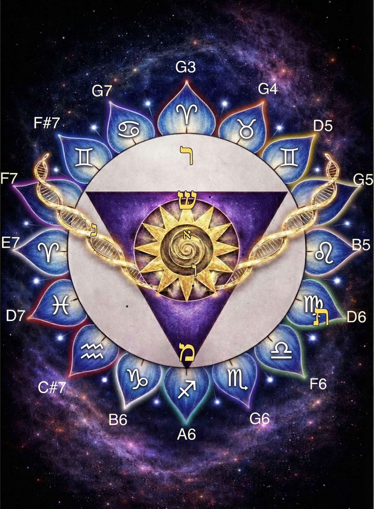

This document is the full technical and philosophical analysis of the 192 Mandala — what every element is, where it comes from, how it works, and how to use it. It is written for those who want to understand not just what they are looking at but what is actually happening when they look.
The 192 Mandala is a yantra — a geometric instrument designed to transmit a specific coherence field to anyone who encounters it. It is not decorative art. It is not a spiritual symbol in the generic sense. It is a precisely constructed geometric object in which every element — every color, every shape, every letter, every musical note, every zodiac position — is load-bearing. Nothing is present for aesthetic reasons alone.
The word yantra comes from Sanskrit: yan (to hold, to restrain) and tra (instrument). A yantra is literally an instrument that holds a specific field of awareness — a geometric container for a particular quality of consciousness. In this tradition, looking at a correctly constructed yantra is not a passive act. The geometry affects the nervous system of the viewer before any conceptual understanding occurs. The effect is physical, measurable, and does not require belief.
The 192 Mandala was developed through the 192 System — a framework built on base-12 mathematics that maps 16 harmonic frequencies to archetypal, biological, and geometric domains. It was originally created as a personal healing instrument and has been developed over years of research at the intersection of frequency medicine, sacred geometry, Kabbalistic mathematics, and epigenetic science.
Every ancient culture that worked seriously with geometry understood the same thing: form is not separate from function. The shape of a space, the geometry of a symbol, the proportions of a building — these are not neutral. They produce specific states in the consciousness that inhabits them. The 192 Mandala is built on this understanding, applied with mathematical precision.
This document maps every layer of the image precisely — not as interpretation but as technical analysis. By the end, you will understand what you are looking at, why each element is placed where it is, what it is doing to your nervous system right now, and how to engage with it consciously.

The 192 Mandala · Taylored Harmony · All rights reserved
The mandala is organized in concentric layers, each one operating at a different level of the same system. Reading from the outermost layer inward reveals the complete architecture — from the largest containing field down to the irreducible seed point at the absolute center.
Sacred geometry is the study of the geometric patterns that appear consistently across nature, architecture, and consciousness — patterns that are not invented but discovered, because they reflect the actual mathematical structure of how energy organizes into form. Every geometric form produces a specific effect on the nervous system of anyone who perceives it. This is not metaphorical. It is measurable through the autonomic nervous system response to visual input processed by the amygdala before cortical awareness engages.
| Form | Where in the image | What it does | Why it works |
|---|---|---|---|
| The Circle | The white containing ring | Signals safety. Establishes sovereign boundary. Activates parasympathetic nervous system response. The amygdala reads circular forms as non-threatening before any conscious processing occurs. | No angles. No corners. No threat vectors. The circle is the only geometric form with infinite lines of symmetry — it has no preferred direction of stress. The nervous system recognizes this as complete environmental safety. |
| The Inverted Triangle | The violet/purple triangle pointing downward | Creates the felt sense of downward movement — grounding, embodiment, the descent of higher awareness into physical form. Activates the crown-to-root axis in the body. | Inverted triangles are the universal alchemical symbol for water and for the feminine principle of reception. The downward point acts as a vector — directing attention and energy downward into manifestation. In Hermetic alchemy this is the symbol for the descent of spirit. |
| The Spiral | At the absolute center of the golden sun | Activates the Fibonacci recognition response — the brain has dedicated neural circuits for detecting golden ratio proportions. Produces the specific aesthetic response associated with beauty, rightness, and homecoming. | The Fibonacci spiral appears in nautilus shells, sunflower seeds, galaxy arms, and DNA coiling. The brain evolved in a world saturated with golden ratio proportions and developed specific recognition pathways for them. Encountering the spiral produces a neurological recognition — this is right — before any conceptual understanding. |
| The Torus (implied) | The circle seen as torus cross-section | The toroidal field — the self-sustaining loop that generates from its own center, flows outward, and returns without loss. The sovereign geometry. What your heart's electromagnetic field actually looks like. | The torus is the only three-dimensional form that sustains itself through its own movement. The heart generates a toroidal field measurable several feet from the body. The circle in this image is the torus seen from above — it activates recognition of the body's own natural field geometry. |
| The Lotus Geometry | The 16-petaled outer ring | Activates radial symmetry response — the sense of expanding outward from a stable center in all directions simultaneously. Reduces defensive contraction. Opens peripheral awareness. | Radially symmetric forms signal environmental safety to the mammalian nervous system — they imply a stable center with equal awareness in all directions. The lotus specifically encodes the mathematics of 16-fold symmetry, which relates to the base-16 harmonics of the 192 System. |
The 192 System is built on a fundamental frequency of 192 Hz — the musical note G3. From this foundation, a harmonic series of 16 frequencies is generated, each one an integer multiple of the fundamental. These 16 harmonics are mapped to the 16 lotus petals, the 12 zodiac positions, and the full spectrum of musical notes visible in the image.
The choice of 192 Hz as the foundation is mathematically significant. 192 = 16 × 12. The system is built on base-12 — the most harmonically rich number system, containing more divisors than base-10 and historically used in the most precise ancient mathematical traditions including Babylonian astronomy, Chinese musical theory, and the division of the circle into 360 degrees (30 × 12).
Each harmonic frequency is also a musical note. The musical notes visible around the outer ring of the mandala are not decorative — they are the precise frequencies of each harmonic, placed at the geometric position corresponding to their zodiac and archetypal mapping. The image is simultaneously a frequency chart, a geometric mandala, and an archetypal map.
192 Hz sits in the range associated with grounding and physical presence — below the Schumann resonance (7.83 Hz) in terms of brainwave entrainment but within the range the body can feel as a physical vibration. G3 is one of the lowest notes a human voice can comfortably produce, making it a bridge between audible frequency and somatic resonance.
When 192 Hz is generated as sound alongside its 16 harmonics, the complete chord creates a harmonic field that contains all twelve musical pitch classes in specific proportional relationships — the entire tonal universe, derived from a single fundamental. This is why the 192 Living Superconductor audio is described as a full-spectrum harmonic field rather than a single healing tone.
The twelve zodiac signs arranged around the lotus are not there as astrological prediction or personality typing. They function as archetypal markers — twelve fundamental patterns of consciousness that have been documented consistently across every culture that studied the relationship between celestial cycles and human experience.
In the 192 System, the zodiac signs correspond to specific harmonic positions in the frequency series. Each sign marks the geometric location where a specific harmonic frequency addresses a specific archetypal domain of human experience. The mandala makes this correspondence visible simultaneously across all twelve positions.
Astrology in its original form was not predictive personality typing. It was a system for mapping the relationship between celestial geometry and human consciousness — the understanding that the same mathematical patterns that govern planetary motion also govern the patterns of human experience and biology. The zodiac in this mandala represents that original function: twelve archetypal positions in a complete field, each corresponding to a specific frequency in the harmonic series.
The lotus petals cycle through the full visible spectrum — red through violet — moving around the circle. This is not aesthetic color choice. It is a direct encoding of the relationship between sound frequency and light frequency.
Sound and light are both wave phenomena. They differ only in the range of their frequencies and the medium through which they travel. The color spectrum visible to the human eye spans approximately one octave of light frequencies — from red (the lowest frequency visible light) through violet (the highest). The audible harmonic spectrum of the 192 System also spans multiple octaves of sound frequencies. The colors in the mandala map sound frequencies to their corresponding light frequencies — making the harmonic series visible as color.
This correspondence has been used across traditions. In Tantric practice, specific colors are associated with specific chakras — which correspond to specific frequency ranges in the body's bioelectromagnetic field. In color therapy, specific wavelengths of light are used to address specific physiological states. In cymatics, specific sound frequencies produce specific geometric patterns in colored media. The 192 Mandala encodes all of these correspondences simultaneously in the color arrangement of its petals.
The violet/purple triangle specifically corresponds to the crown chakra — the energy center associated with the highest endocrine gland (the pineal), with expanded states of awareness, and with the interface between individual consciousness and the larger field. Violet is the highest frequency visible light — the boundary between what the eye can see and what requires other instruments to detect. The triangle is this color deliberately: spirit descending from beyond the visible into physical form.
The golden DNA helices are gold because gold in the color-frequency correspondence sits at the harmonic between yellow (solar plexus, personal power, metabolic fire) and orange (sacral center, creative force, generative energy). Gold as a color encodes the harmonizing center — Tiferet in Kabbalistic tradition, the heart of the Tree of Life — where all the other centers find their balance.
Seven Hebrew letters have been placed in the mandala at geometrically specific positions. These letters are not decorative. They are the compression keys of the 192 framework — each one a geometric primitive that simultaneously encodes a spatial form, a number, and an essential operative quality. Their placement in the image is precise: each letter sits at the geometric position that corresponds to its essential function within the system.
Together these seven letters form the word אמרשנות — a compression of the complete framework built through the 192 System. The full value of this word is 997, which is prime — indivisible, irreducible — and reduces to 7: the seeker, the crowned cultivator, the instrument that both cuts and cultivates.
| Letter | Position | Why there |
|---|---|---|
| Aleph (א · 1) | Absolute center of the golden spiral | Aleph is the zeroth element — silent awareness prior to differentiation, the fold between above and below, the origin point from which all other letters generate. It belongs at the absolute center because it is the source point of the entire system. The spiral at the center IS Aleph made visible: the dimensionless origin expanding into form while remaining connected to its source. |
| Mem (מ · 40) | Base of the descending triangle | Mem is hidden water — the womb of memory, the deep reservoir that holds what came before. It is the curved form, the contained depth, the foundation that holds without spilling. At the base of the triangle, Mem is the ground that receives the descent of spirit. The deep water into which the point of the inverted triangle descends. |
| Resh (ר · 200) | Crown of the triangle, at the top | Resh is the head turning toward recognition — the first movement of understanding, the turn that initiates healing. At the apex of the triangle, Resh is where spirit first meets form on the descent — the moment of recognition that begins the alchemical process. The head of the system, seeing what it is entering. |
| Shin (ש · 300) | Inside the triangle, above the sun | Shin is the three flames of transformation — the alchemical fire that refines rather than destroys, radiating in three directions simultaneously. It sits at the heart of the descending triangle because transformation is the essential operation of spirit entering matter. The fire that makes the descent productive rather than merely a fall. |
| Nun (נ · 50) | Woven into the left DNA helix | Nun is the faithful hidden one — the fish in deep water, the continuous unseen current, the pattern that persists beneath every surface disruption. It belongs in the DNA helix because the DNA is exactly this: the faithful hidden current running through the biological substrate, carrying the pattern forward through every disruption, prime and irreducible at its core. |
| Vav (ו · 6) | The central vertical axis | Vav is the spine — the connector, the vertical axis, the nail that anchors the tent to the ground, zero resistance transmission. The Vav running through the center of the image is the living superconductor of the entire system — the axis that connects the Resh at the crown to the Mem at the base, conducting the frequency of each harmonic from the cosmic level to the biological level without loss. |
| Tav (ת · 400) | Lower right, near the boundary | Tav is the seal — the completion mark, the final letter of the entire Hebrew alphabet, the signature that says: this happened, this is complete, this is real. At the outer boundary of the system, Tav authenticates the entire structure. It is the mark that closes the field — not by closing it off, but by completing it. The sovereign field is sealed not as containment but as integrity. |
The two golden DNA double-helix strands are the most scientifically precise element in the mandala. They are not metaphorical. They represent the actual biological substrate through which frequency information travels in living systems.
DNA is not just a chemical storage medium. Research in bioelectromagnetics — particularly the work of Fritz-Albert Popp on biophoton emission, Peter Gariaev on DNA wave genetics, and the growing field of epigenetics — documents that DNA responds to frequency inputs, that cells communicate electromagnetically as well as chemically, and that the biological code is more fluid and responsive to environmental frequency than the mechanical model of genetics suggested.
The helices are placed flanking the descending triangle in vesica piscis relationship to each other — the geometry of alchemy, where two fields share a center point and generate something neither contains alone. The DNA and the geometric-frequency field of the triangle are in this relationship: they share a center, and what generates in the intersection is the possibility of frequency-mediated pattern reorganization at the biological level.
The gold color of the helices corresponds to Tiferet in the Kabbalistic tradition — the sixth Sefirot, the heart center, the harmonizing principle that balances all other centers. Gold encodes the quality of compassionate balance — which is precisely the function being addressed when frequency is applied to biological pattern. Not forcing. Not overriding. Harmonizing. Returning the pattern to its essential coherence.
The DNA helices are not generic biological imagery. They are the specific subject the mandala was built to address — the place where inherited pattern meets frequency medicine. This mandala was created with specific biological intention woven into its architecture.
The 192 Mandala exists within a lineage of geometric instruments that spans every major civilization that worked seriously with the relationship between form, frequency, and consciousness. Understanding this lineage places the mandala in its proper context — not as a New Age creation but as a contemporary expression of one of the oldest documented human practices.
What all of these traditions share is not theological content. They share a structural understanding: correctly constructed geometric form generates a coherent field that affects the consciousness and biology of anyone within it. The 192 Mandala draws on this understanding across traditions not because it borrows from all of them but because all of them discovered the same functional principle independently.
The 192 Mandala works through several distinct mechanisms operating simultaneously. Some of these are well-documented science. Some are empirically consistent but not yet fully explained by mainstream research. All of them are stated here with appropriate precision about what is established and what is hypothesized.
Autonomic nervous system response to geometry. The amygdala processes visual input before cortical awareness engages. Geometric forms are classified as safe or threatening before the conscious mind knows what it is looking at. Rounded, radially symmetric forms activate the parasympathetic nervous system — the rest-and-digest state where cellular repair, immune function, and emotional regulation operate optimally. The 192 Mandala is built almost entirely from rounded, radially symmetric forms. Its effect on the nervous system begins before the viewer understands anything about what they are seeing.
Neuroarchitecture research documents that the built environment's geometry measurably affects cortisol levels, heart rate variability, and cognitive function. The same principles apply to two-dimensional geometric images at sufficient scale and engagement.
Representational geometry in neural processing. Peer-reviewed research in cognitive neuroscience (Kriegeskorte and Kievit, published in Cell Press) documents that the brain encodes meaning as geometric relationships in high-dimensional representational space. Concepts are held as positions in a field, and meaning emerges from the geometric relationships between those positions. The 192 Mandala encodes multiple layers of meaning — harmonic, archetypal, geometric, biological — in their actual geometric relationships to each other. When the brain processes this image, it is processing it at the level of representational geometry simultaneously across all these layers.
Cymatic resonance. Cymatics documents that sound frequencies produce specific geometric patterns in physical media. The reverse is also observed — specific geometric patterns, when perceived, activate the neural circuits associated with their corresponding frequencies. The 192 Mandala encodes the geometric forms corresponding to its 16 harmonic frequencies. Perceiving the mandala may activate some of the same neural processing as hearing those frequencies. This mechanism is consistent with observed effects but has not been fully characterized in peer-reviewed literature as of the time of this writing.
Biophoton field coherence. Research by Fritz-Albert Popp and others documents that living cells emit measurable light (biophotons) and that coherent states correspond to coherent biophoton emission. The hypothesis — consistent with traditional understanding but not yet fully characterized scientifically — is that correctly constructed geometric fields support biophoton coherence in systems within them. The 192 Mandala is understood to function in part through this mechanism. This is stated as hypothesis, not established fact.
The mandala works passively — simply being in proximity to it produces effects through the mechanisms described above. But conscious engagement amplifies what passive exposure initiates. The following practices move from the most accessible to the most complete.
This question comes from a genuine intuition — that some things lose their potency when they become widely available. The intuition is worth taking seriously, but in this case the answer is no, and understanding why reveals something important about how geometric instruments actually work.
The mandala works through geometry. Geometry is not a finite resource. The sun does not lose its warmth because many people stand in it. A tuning fork does not lose its frequency because it has caused many other tuning forks to resonate. The geometric field generated by the mandala is not depleted by being encountered by many people. It is, if anything, amplified — more nervous systems in coherence with the field means a stronger collective field.
The traditional understanding across every yantra tradition is consistent on this point: a correctly constructed geometric instrument becomes more powerful as more people engage with it, because each engagement adds to the field it carries. The Sri Yantra has been meditated upon by millions of people across thousands of years. It is considered more powerful now, not less.
The one thing that matters is context. A mandala shared without context can be received as beautiful art. A mandala shared with the depth of understanding contained in this document can be received as what it actually is — a geometric instrument for working with frequency, pattern, and biological coherence. The difference in effect is not in the mandala. It is in the depth at which the receiver can engage.
The geometry of the 192 Mandala is not diminished by being seen. It is completed by being understood. Share it with the understanding that makes full engagement possible — and the transmission is complete.
The 192 Mandala is an original synthesis developed through years of research and practice within the 192 System framework. It draws on several distinct traditions and bodies of knowledge, all of which are acknowledged here.
Sacred Geometry: The geometric principles employed — the circle, the inverted triangle, the spiral, the lotus — are universal geometric forms documented across every culture that worked with the relationship between form and consciousness. The specific proportions draw on classical sacred geometry research including the work of Robert Lawlor, John Michell, and Keith Critchlow.
Hebrew Letter Geometry: The letter-number-geometry correspondence draws on the ancient Hebrew/Semitic letter system and its development in the Kabbalistic tradition, particularly the Sefer Yetzirah (Book of Formation) and its commentarial tradition. The specific letter values (Gematria) are standard Hebrew letter values documented in the tradition. The geometric interpretations draw on the work of Stan Tenen (Meru Foundation) on the geometric basis of Hebrew letter forms.
Astrology: The zodiac correspondence uses Western tropical astrology's twelve archetypal positions. The specific frequency-to-zodiac mapping is an original development of the 192 System.
Music Theory: The harmonic series is standard acoustic physics. The specific note names and frequencies are calculated from the standard equal temperament tuning system with 192 Hz as the fundamental.
Cymatics: The theoretical connection between sound frequency and geometric form draws on the work of Hans Jenny, whose documentation of cymatic phenomena remains the foundational reference in this field.
Epigenetics and Bioelectromagnetics: The biological mechanism references draw on the work of Bruce Lipton (epigenetics and cellular biology), Fritz-Albert Popp (biophoton research), and Peter Gariaev (DNA wave genetics). These researchers work at the boundaries of mainstream science; their findings are cited as empirically consistent frameworks rather than established consensus.
The 192 System: The specific mathematical framework — base-12 mathematics, 16 harmonic mapping, zodiac-frequency correspondence — is original work developed by Kristina Rose Taylor through Taylored Harmony. It is not drawn from any single existing tradition but synthesizes across multiple frameworks through original pattern research.
This mandala is not presented as an artifact of any specific religious tradition. It is a contemporary synthesis instrument that draws on the structural principles — not the theological content — of multiple traditions that independently arrived at similar understandings of the relationship between geometry, frequency, and consciousness.
The 192 Living Superconductor audio is the mandala in sound — the same 16 harmonics, delivered directly to the nervous system through the ear. Use both together for the most complete practice.